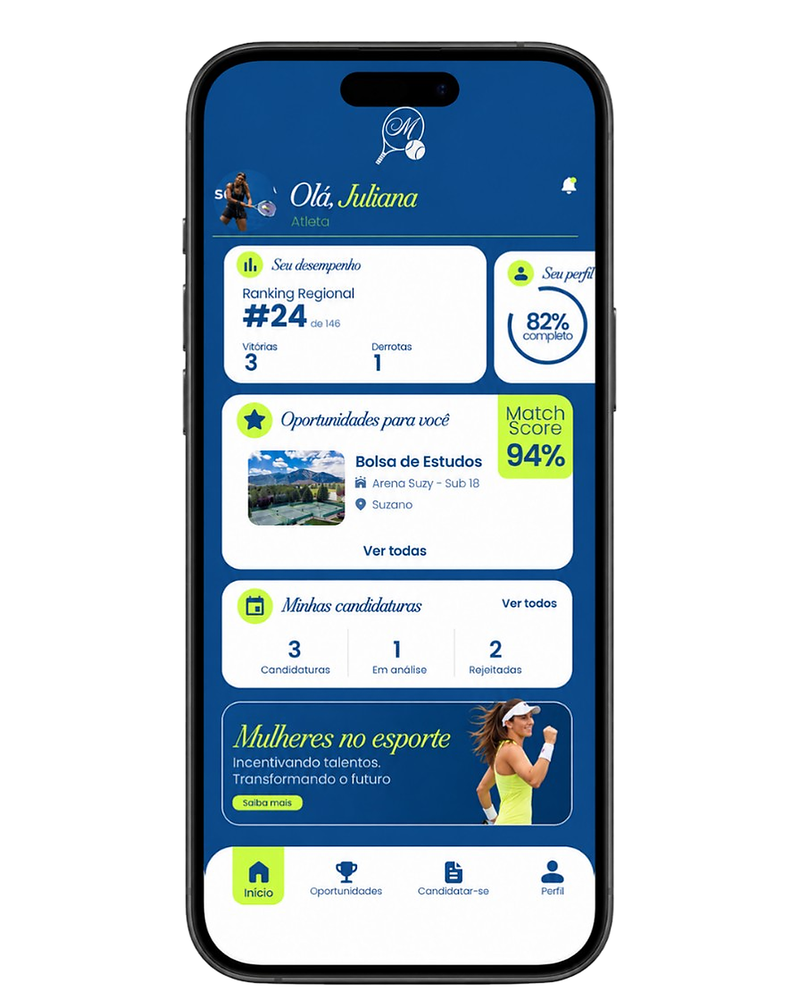

01Atleta
Para quem quer ir além.
- Criar perfil esportivo
- Encontrar oportunidades
- Acompanhar candidaturas
Preparando o próximo ponto
O MatchPoint aproxima atletas, treinadores e instituições para transformar potencial esportivo em oportunidades reais.
Perfis de atletas menores são administrados pelo responsável legal, do cadastro à candidatura.
Descoberta, candidatura e avaliação em uma jornada clara, sem substituir a decisão humana.
O atleta cria seu perfil esportivo, registra objetivos e necessidades.
Treinadores e instituições publicam possibilidades reais de apoio.
A compatibilidade é calculada com critérios transparentes.
O atleta envia seu perfil e os documentos necessários em um só lugar.
Treinadores analisam o potencial técnico quando necessário.
A instituição decide e acompanha o apoio e seus resultados.
Importante A tecnologia aproxima. A decisão é humana.
O Match Score cruza nível esportivo, objetivos, necessidades, localização e disponibilidade para indicar a sintonia entre atleta e oportunidade.
Seu nível competitivo e seus objetivos estão entre os critérios mais valorizados pela instituição.
Uma área para ampliar a participação feminina e tornar oportunidades, eventos e conteúdos mais visíveis e acessíveis.
Conhecer a iniciativa ↗O impacto do MatchPoint está em transformar caminhos dispersos em relações mais claras, acessíveis e acompanhadas.
Atletas encontram oportunidades com informações mais claras e fáceis de comparar.
Treinadores e instituições reúnem divulgação, candidaturas e avaliações no mesmo fluxo.
Decisões, concessões e resultados ficam registrados ao longo da jornada.
Encontre oportunidades compatíveis, acompanhe candidaturas e receba atualizações importantes sem depender de mensagens perdidas ou indicações informais.


Relatos ilustrativos baseados nos problemas que o produto busca resolver. As pessoas e falas abaixo são fictícias.
“Eu encontraria bolsas compatíveis com meu perfil e acompanharia cada candidatura sem depender de grupos de mensagem.”Benefício: descoberta e acompanhamento
“Eu compararia perfis com critérios visíveis e manteria as avaliações organizadas no mesmo fluxo.”Benefício: seleção mais clara
“Eu conseguiria identificar talentos e acompanhar onde o apoio chegou e como cada jornada evoluiu.”Benefício: impacto acompanhado
“Eu teria documentos, candidaturas e atualizações do atleta menor de idade reunidos em um ambiente mais organizado.”Benefício: participação responsável
O MatchPoint foi concebido para oferecer acesso gratuito a atletas, treinadores e instituições. O aplicativo está em fase de preparação para lançamento.
O essencial sobre acesso, perfis e lançamento.
Sim. A proposta de lançamento é oferecer acesso gratuito a atletas, treinadores e instituições.
Atletas, treinadores e instituições poderão escolher jornadas próprias. Atletas menores de idade contam com vínculo de responsável.
Ainda não. A versão Android está em preparação e o link oficial será publicado aqui quando o APK final estiver disponível.
Ele apresenta a compatibilidade entre perfil e oportunidade com base em critérios visíveis, como objetivos, categoria, nível e disponibilidade.
Não. A plataforma organiza o encontro e o acompanhamento; a avaliação e a decisão final continuam sendo humanas.
Entre em uma rede que aproxima quem tem potencial de quem pode abrir caminhos no esporte.